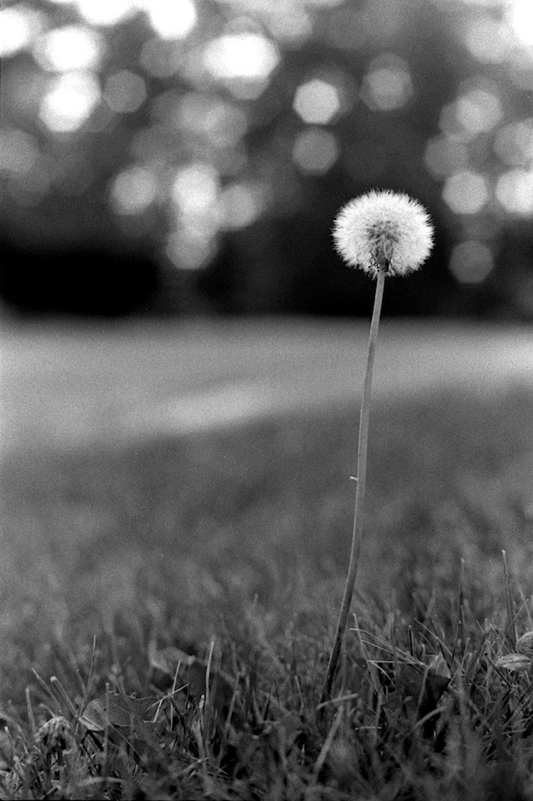

Who We Are
Whether armed with dSLRs or cell phone cameras, we are a club of students passionate about photography!
Don't have a dSLR? Don't even know what a dSLR is? That's okay—come and find out!
What We Do
- photographic community service projects—for example, Help-Portrait
- photo walks—explore the community around us through the lens of a camera
- maintain online portfolios—browse over to "Members" to see some examples
- constructive critiques—feedback from fellow student photographers
- share experiences, tips, and friendship! (friendship, as everybody knows, is magic.)
